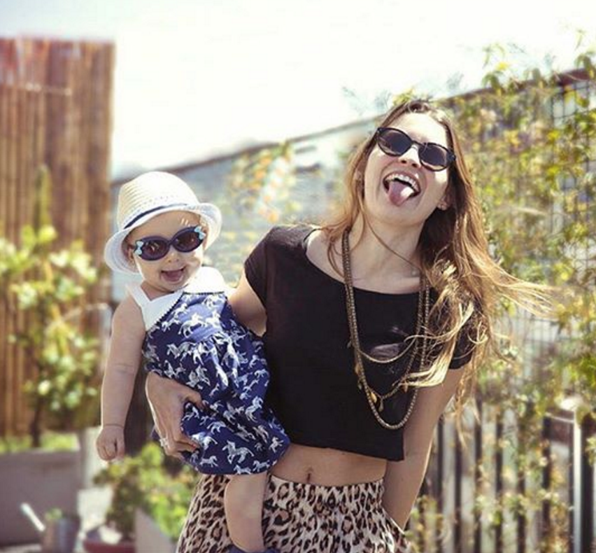

Angie Braun estudió dirección cinematográfica en la Fundación Universidad de cine (FUC). Dos de sus guiones de cortometraje, Noche de Búhos y Todas Las Noches, fueron distinguidos y seleccionados para ser dirigidos por ella. Cautivada por la emoción profunda de la imagen fija, comenzó a ahondar en la fotografía. Estudió Fotografía Digital en La Accademia de Arte, en Florencia, Italia.
En Buenos Aires colaboró en las áreas de producción e iluminación de proyectos de otros directores. Trabajó como asistente de producción de Herederos de una venganza y El Puntero en Pol-ka Producciones. También como asistente de dirección en History Channel y National Geographic. Estudió actuación en la Escuela de Agustín Alezzo.
Hace unos años que decidió dedicarse plenamente a la fotografía trabajando para clientes como Pía Carregal, La Cardeuse, Cool Hunter, Banco Supervielle, Aeropuertos Argentina 2000, Laurencio Adot, Audi, Paula y Agustina Ricci, entre otros.